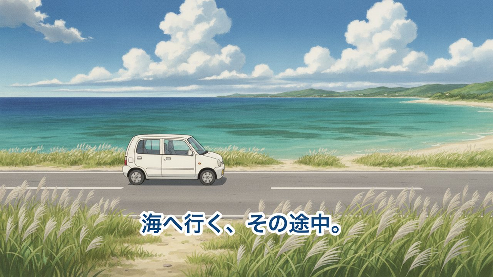
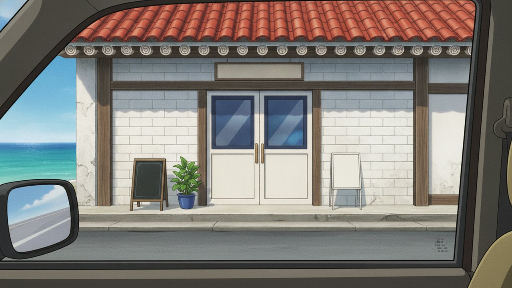
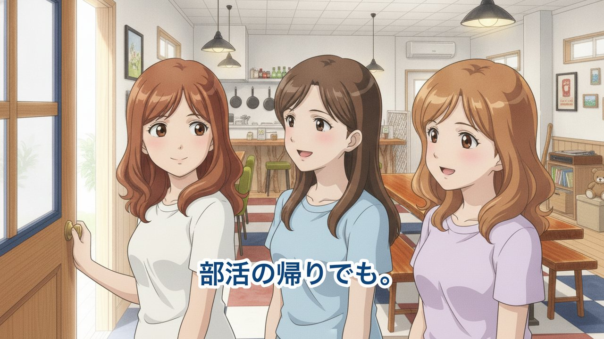
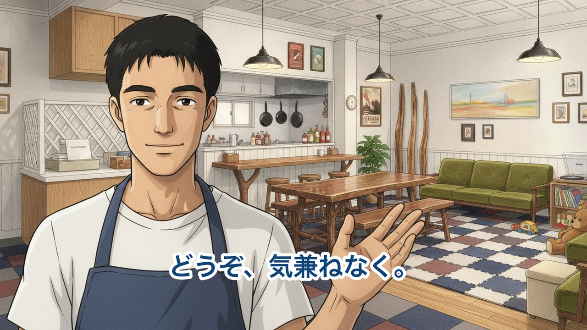
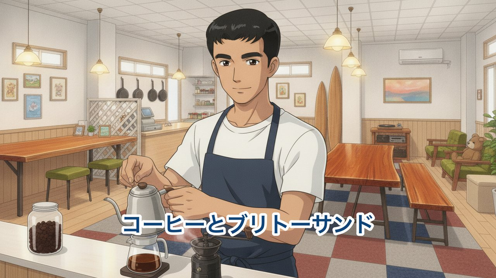
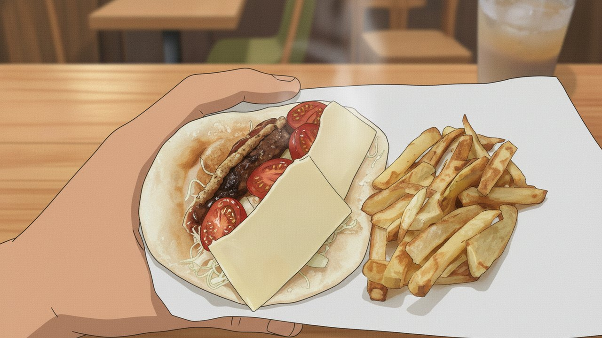
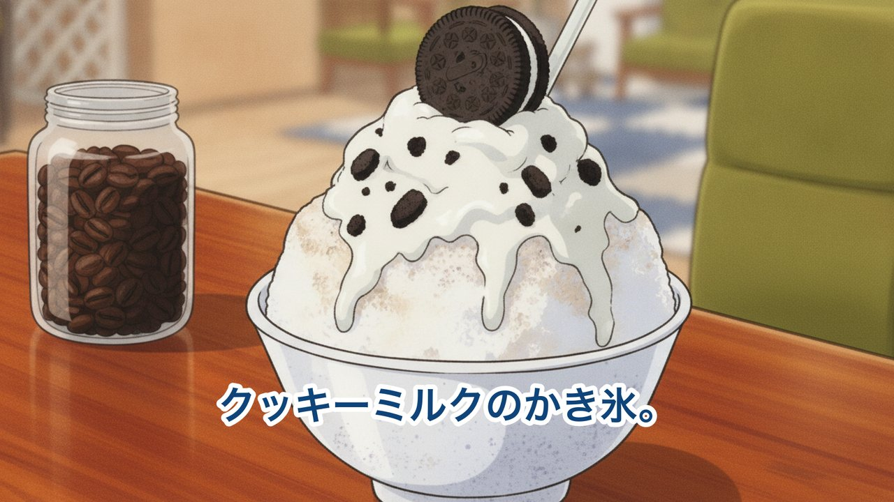
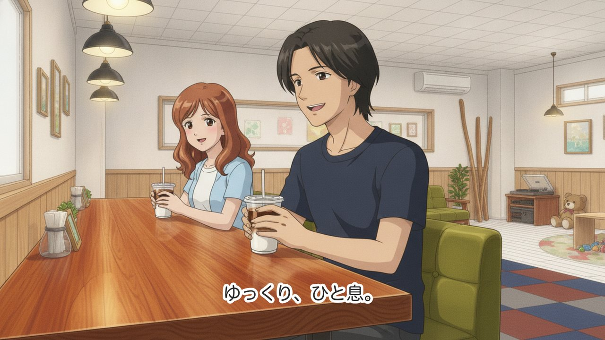
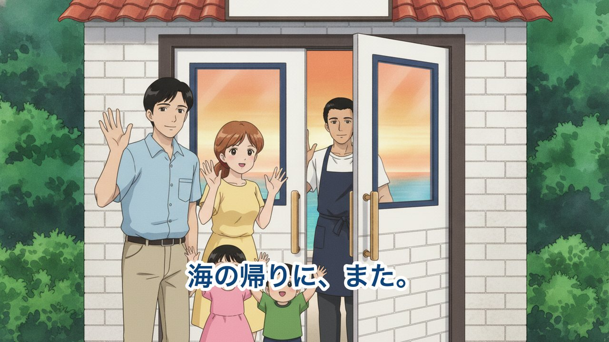
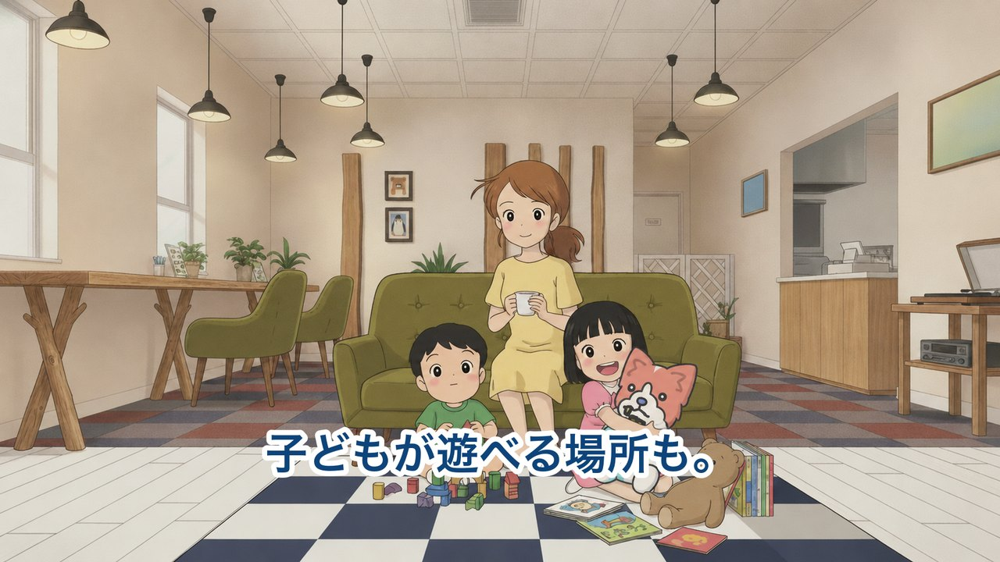

Café Ksun AI動画 構成案 v9
コーヒーとブリトーサンド／沖縄県うるま市 — 画像つなぎ合わせのプレビュー（動きとBGM・ナレーションはこの後の工程で入ります）
アニメ風45秒
全14シーン1920×1080
今回の変更点（v9）
- 全シーンの絵柄を1つに統一しました — あたたかいクリーム色の光、木の腰壁、やわらかい人物の描き方。 これまでシーンごとに色味やタッチが揺れていた部分を、全カット揃えています。
- 入口の扉は、片側だけを開けて通る形にしています — 両方を開け放った不自然な状態をなくしました。
- 店内をしっかりお見せしています — 一枚板のカウンター、オリーブグリーンの席、黒いシェードのペンダントライト、 白木の格子、レジまわり、キッズスペース。人物のうしろに店の作りが分かるようにしています。
- 登場人物は、シーンが変わっても同じ顔で出てきます（ご家族・学生さん3人・カップル）。
プレビュー動画
この段階でご確認いただきたいのは「流れ」と「絵の方向性」です。 現在は静止画をつないだ状態のため、動き・BGM・ナレーション・効果音は入っていません。 ご確認いただいた内容で、動画化の工程に進みます。
シーンごとの構成

S010.0〜2.5秒
海沿いの道。海へ向かうドライブの途中、という入り方。
テロップ 海へ行く、その途中。

S022.5〜5.5秒
車の窓から、赤瓦の古い家がふと目に入る。まだ「ただの民家」に見えるのがポイント。
（文字なし・絵と音楽だけで見せるカット）

S035.5〜9.0秒
車を降りると、そこはカフェだった。赤瓦の佇まいと、その先の海が一緒に見えるカット。
テロップ え、ここカフェなんだ。

S049.0〜12.5秒
小さなお子さん連れのご家族が入っていくところ。
テロップ 小さな子ども連れでも。

S0512.5〜15.5秒
続けて学生さんが入ってくるところ。入店シーンを2つ重ねます。
テロップ 部活の帰りでも。

S0615.5〜18.5秒
店主が軽く手をあげて迎える。かしこまらない迎え方。
テロップ どうぞ、気兼ねなく。

S0718.5〜21.5秒
カウンターでドリップする手元。コーヒー豆の瓶とミル。
テロップ コーヒーとブリトーサンド

S0821.5〜24.5秒
焼きたてのブリトーサンドを包む手元。具は実物どおり。
（文字なし・絵と音楽だけで見せるカット）

S0924.5〜28.0秒
大きくかぶりつく瞬間。主力商品を見せる山場。
テロップ まずは、がぶり。

S1028.0〜31.0秒
クッキーミルクのかき氷。白い氷に黒いクッキー。
テロップ クッキーミルクのかき氷。

S1131.0〜34.0秒
カップルがアイスカフェオレでひと息。
ナレーション ゆっくり、ひと息。

S1234.0〜37.0秒
キッズスペースで遊ぶお子さんと、くつろぐお母さん。
テロップ 子どもが遊べる場所も。

S1337.0〜40.0秒
夕方、ご家族が見送られて帰る。
テロップ 海の帰りに、また。

エンドカード40.0〜45.0秒
屋号・キャッチ・住所・営業時間・Instagram QR。電話番号は掲載しない。
（文字なし・絵と音楽だけで見せるカット）
動画に表示する店舗情報
ご確認いただきたい点
- 全体の構成・流れ、そして絵の雰囲気はこの方向性で問題ないでしょうか。
- 気になるシーン・変更したい点がありましたら、シーン番号（S01〜S11）と一緒にお知らせください。 人物の性別や、登場する食べ物の変更も承ります。
- お打ち合わせでお伺いした店舗オリジナルキャラクターは、まだ制作中とのことでしたので 今回のプレビューには入れておりません。素材をいただき次第、 S08（かぶりつくシーン）とエンドカードに登場させる想定で組んでいます。 この置き場所でよろしいでしょうか。
あわせてお願いしたいもの
- 店舗ロゴのデータ（できるだけ大きいサイズ） — 現在いただいているロゴ画像が小さく、看板とエンドカードは組み直して再現しています。 元データをいただけますと、正確なロゴでお作りできます。
- メニューの価格を動画に表示するかどうか — 現在は表示していません（お預かりした写真のメニュー表からの価格のため、 現在の価格と異なる可能性があるため）。
- 定休日 — 資料に記載がなかったため、エンドカードには入れておりません。
今後修正のご希望がございましたら、お手数ですが シーン番号と一緒に一度にまとめてお送りいただけますと幸いです。